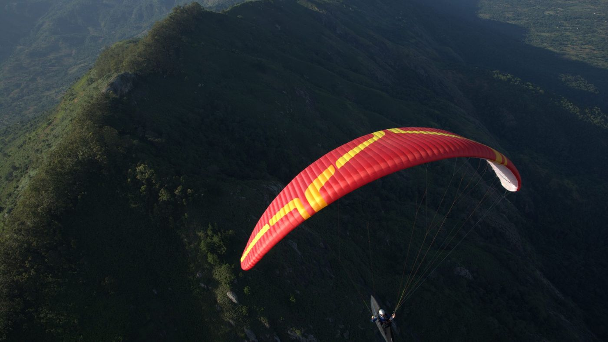
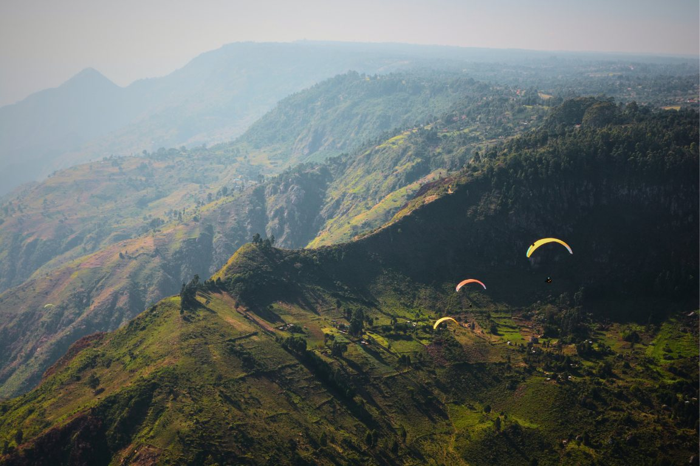
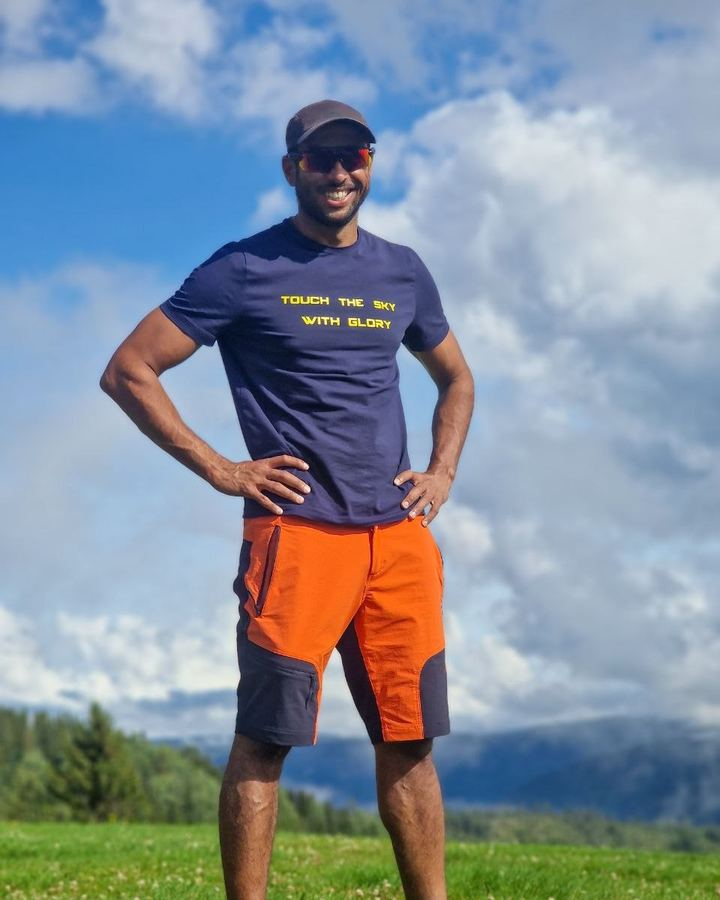
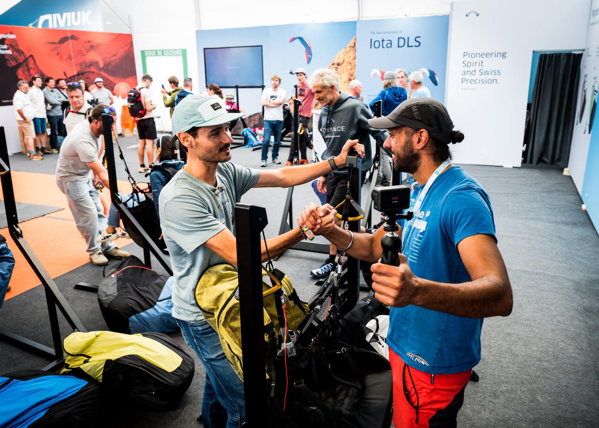

One only
Title Partner
- Your name in the attempt's title
- Your mark on kit and on camera
- Sponsored segments in the build-up and debrief episodes
- First credit in the film
- Your logo on the live tracking page

World Record Attempt Kerio Valley, Kenya
Two world records for speed: 100 km and 200 km, out and return.
Partner on the attempt01
100 km mark, class O-3
35.94km/h
My best average, about
36km/h
The time to beat: 100 km in 2 h 47 min.
200 km mark [to supply]
Class O-3 is paragliders. Speed is the course distance over the time.
One FAI listing shows the 100 km mark as a claim under review, another as the record: FAI CIVL records.
My 198.86 km flight, about 36 km/h on a UP Trango X (EN C), was logged on XContest. It was not a record course: UP Paragliders.
The claim goes to the FAI under the Sporting Code, Section 7D.
02
03
The base of my Kenya expeditions, and the site where the world speed records are chased.

04
Alongside my two Kenya expeditions.
DuringLive tracking from Kerio Valley on attempt days, daily updates
Wing, instruments, team, FAI observer [to supply]
And the newsletter
A debrief episode and the flight data
05
Podcast, YouTube and a newsletter about four times a month.

06
Prices in the media kit, on request. Every sponsorship is clearly marked as sponsored.

One only
Sources: UP Paragliders, FAI records, Sporting Code 7D, the Kenya expedition